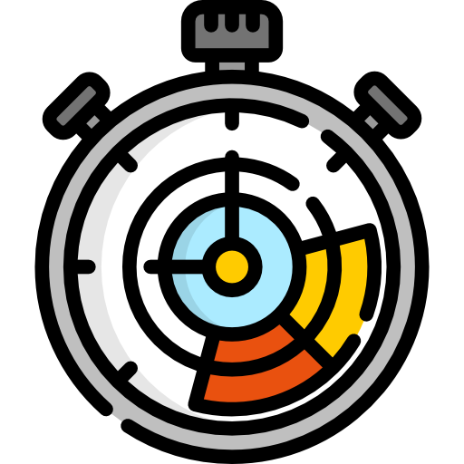

One of the most important differences between symmetric and asymmetric encryption is encryption speed. Here you can view the performance difference between RSA (asymmetric) and AES (symmetric) algorithms measured on your smartphone.

Asymmetric encryption has a limit for the maximum length of the encrypted message. Therefore, to encrypt a larger amount of data we have to split it into short chunks and encrypt each one of them separately. To decrypt the message we would have to decrypt each chunk and merge them in the correct order.
A few technichal details about the performance test:
- You can select encryption algorithms and keys by tapping on the table cells
- The performance depends on the current CPU usage, background processes activity, available memory, etc.
- In order to show the correlation between the performance and the input data size, the encryption is performed on random data of various sizes, from 1kB to 10MB
- The application uses the Apple encryption algorithms implementation for iOS. See Apple Developer Documentation for details.
- For AES encryption a randomly generated session key is used. The session key, in turn, is encrypted with a RSA key and appended to the encrypted data. If a 2048-bit RSA key is selected then a 128-bit AES key is generated. For a 4096-bit RSA key a 256-bit AES key is generated.
- The short algorithm names are used in the table for the brevity:
- RSA 1: RSA encryption PKCS1
- RSA 256: RSA encryption OAEP SHA-256
- RSA 512: RSA encryption OAEP SHA-512
- AES 1: AES encryption OAEP SHA-1 GCM
- AES 224: AES encryption OAEP SHA-224 GCM
- AES 512: AES encryption OAEP SHA-512 GCM